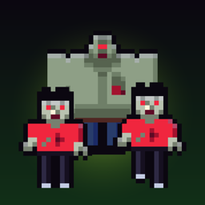

Dead Line Support
Need help? Email jiezhou0731@gmail.com and include your device model and iOS version. We usually reply within two business days.
How do I play?
Your gatling turret holds the wall and aims at the nearest zombie by itself; drag to aim it yourself. Kill zombies to level up and pick one of three upgrades each time. Hold the line for five minutes, then defeat the chapter boss to unlock the next chapter.
What does stamina do?
Each run costs stamina, which refills over time. You can also buy more with gems.
I bought something but didn't get it
Close and reopen the game. Purchases that were interrupted are delivered automatically the next time the game starts.
I reinstalled or got a new device
Open the 商店 (Shop) tab, scroll to the bottom and tap 恢复购买 (Restore Purchases). This restores the First Purchase Pack's operator, Valkyrie Ella. Gems, gold, the Month Card and other progress are saved only on the device they were bought or earned on.
Refunds
Payments are handled by Apple. Request a refund at reportaproblem.apple.com.
Language
The game is in Simplified Chinese.
Privacy
The game collects no personal data. See the Privacy Policy.